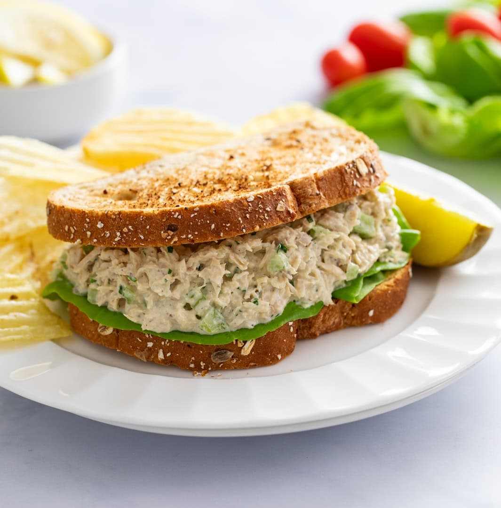

Tuna Salad

Description
This is like no Tuna Salad you’ve had before! This easy recipe can be made with or without mayo along with crunchy celery and onions, a hint of relish and mustard, zesty lemon juice, and simple seasonings!
Ingredients
- 2 (5-oz.) cans albacore tuna
- 1 stalk celery
- 2 tablespoons white onions
- 1/3 cup mayo
- 1 tablespoon dill or sweet relish
- 1 tablespoon lemon juice
- 1 tablespoon parsley
- 1 teaspoon yellow mustard
- 1/4 teaspoon EACH: salt, garlic powder, dry dill weed, freshly cracked pepper
- 1 pinch cayenne
Steps
- Use the lid of the tuna can (or a tuna can strainer) to completely drain the tuna. This is important, as we don’t want watery tuna salad!
- Shred/break the tuna apart thoroughly to create a lot of surface area, this will ensure the other ingredients are well distributed and absorbed.
- Mix the tuna salad ingredients together in a medium bowl until well combined.
- Chill for at least 30 minutes prior to serving if possible. Otherwise, it may be served immediately. Serve in a lettuce wrap, in a sandwich, wrap, or with crackers!